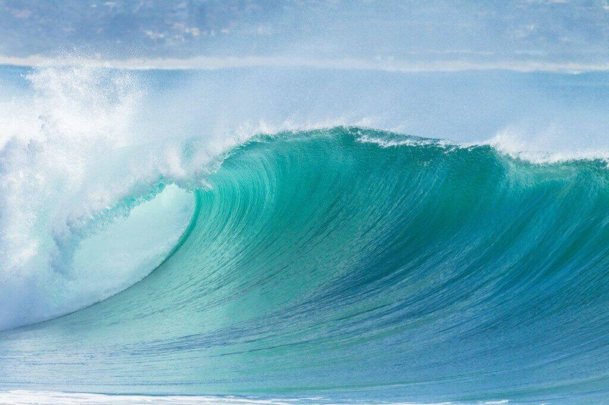

Big Wave Surfing

The Biggest Waves In The World
- San Diego, California
-
- Nazaré, Portugal
- Tasmania, Australia
- Half Moon Bay, California
- Cape Town, South Africa
the biggest wave in the world

Big wave surfing is a discipline within surfing in which experienced
surfers paddle into, or are towed into,
waves which are at least 20 feet (6.2 m) high,
on surf boards known as "guns" or towboards.
[1] Sizes
of the board needed to successfully surf these waves
vary by the size of the wave as well as the technique
the surfer uses to reach the wave.
A larger, longer board allows a rider to paddle fast enough
to catch the wave and has the advantage of being more stable, but it also limits maneuverability and surfing speed
In 1992, big wave surfers such as Buzzy Kerbox, Laird
Hamilton and Darrick Doerner introduced a cross over sport
called tow-in surfing.[4] While many riders still
participate in both sports, they remain very distinct
activities. This type of surfing involves being towed into
massive waves by jet ski, allowing for the speed needed
to successfully ride. Tow-in surfing also revolutionized board size, allowing surfers to
trade in their unwieldy 12 ft. boards in favor of light, 7 ft boards that allowed for more
speed and easier maneuvrability in waves over 30 ft (10 meters).
By the end of the 1990s, tow in surfing allowed surfers to ride waves exceeding 50 ft
(15 meters).